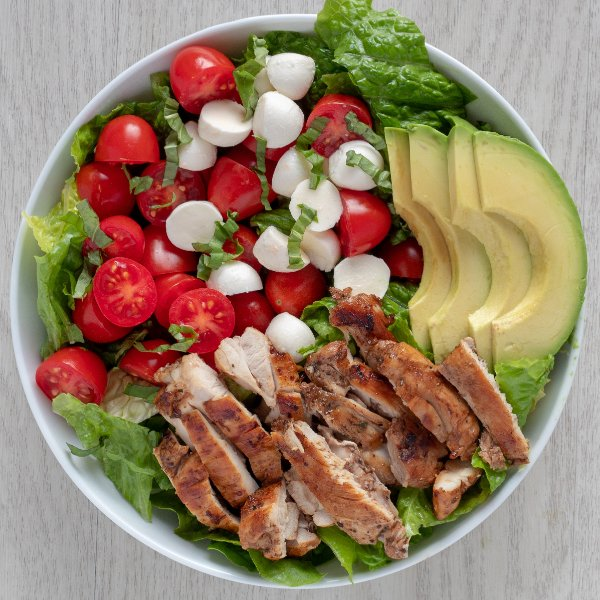

Balsamic Grilled Chicken with Fresh Mozzarella & Avocado Salad Bowl

Total Time
35 min
Nutrition (Per Serving)
713.5 kcalCalories
57.6 gProtein
29.8 gCarbs
41.5 gFat
Full nutrition table
| Calories | 713.5 kcal |
| Total fat | 41.5 g |
| Saturated fat | 12.3 g |
| Trans fat | 0.2 g |
| Cholesterol | 235.6 mg |
| Sodium | 439.3 mg |
| Carbohydrates | 29.8 g |
| Fiber | 12 g |
| Sugars | 15 g |
| Protein | 57.6 g |
| Potassium | 1998.9 mg |
| Calcium | 313.5 mg |
| Iron | 6.6 mg |
| Vitamin A | 1526.6 IU |
| Vitamin C | 39.1 mg |
| Vitamin D | 6.8 IU |
Cookware
Ingredients
- 1avocado
- 2 lbchicken thighs, boneless skinless
- 1 small pkgfresh basil
- ½ (8 oz) pkgfresh mozzarella cheese
- 4 clovesgarlic
- 2 pintsgrape tomatoes
- 2 headsromaine lettuce
- balsamic vinegar
- basil, dried
- extra virgin olive oil
- pure maple syrup
- salt
- virgin coconut oil
Steps
- Wash and dry the fresh produce.2 heads romaine lettuce
2 pints grape tomatoes
1 avocado
1 small pkg fresh basil - Peel and mince garlic; transfer to a small bowl.4 cloves garlic
- To finish the marinade, add balsamic vinegar, olive oil, maple syrup, dried basil, and salt to the bowl with the garlic; whisk to combine.½ cup balsamic vinegar
¼ cup extra virgin olive oil
2 tsp pure maple syrup
2 tsp basil
2 tsp salt - Preheat a skillet over medium-high heat.
- Transfer chicken to a shallow bowl. Pour half of the marinade over the chicken and stir until well coated. Set the remaining untouched marinade aside to use as salad dressing.2 lb chicken thighs, boneless skinless
- Once the skillet is hot, add oil and swirl to coat the bottom. Add chicken and cook until cooked through, 4-5 minutes per side. Transfer to a plate and set aside to cool.1 tbsp virgin coconut oil
- Chop romaine crosswise into strips and divide between bowls. Halve grape tomatoes and add to the bowls with the romaine.
- Cut the fresh mozzarella into bite-sized pieces and add to the bowls.½ (8 oz) pkg fresh mozzarella cheese
- Halve and pit the avocado. Slice thinly while still in skin, then scoop out and add to the bowls.
- Slice chicken into strips and add to the bowls.
- Pick leaves off the basil stems, roll up crosswise and thinly slice into ribbons and sprinkle over top of the salad.
- Drizzle with remaining dressing and enjoy!